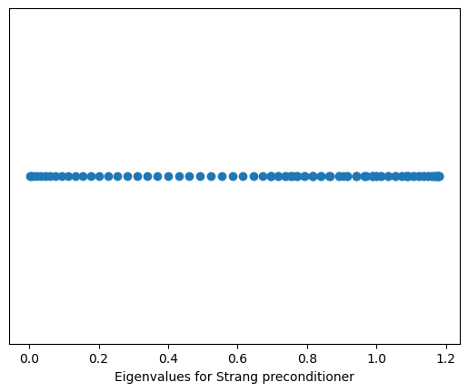

Properties: * Symmetric (not Hermitian!) * Unitary up to a scaling factor: F_n^* F_n = F_n F_n^* = nI (check this fact). Therefore F_n^{-1} = \frac{1}{n}F^*_n * Can be multiplied by a vector (called discrete Fourier transform or DFT) with \mathcal{O}(n \log n) complexity (called fast Fourier transform or FFT)! FFT helps to analyze spectrum of a signal and, as we will see later, helps to do fast mutiplications with certain types of matrices.
%matplotlib inlineimport matplotlib.pyplot as pltimport numpy as npN =1000dt =1.0/800.0x = np.linspace(0.0, N*dt, N)y = np.sin(50.0*2.0*np.pi*x) +0.5*np.sin(80.0*2.0*np.pi*x) +0.2*np.sin(300.0*2.0*np.pi*x)plt.plot(x, y)plt.xlabel('Time')plt.ylabel('Signal')plt.title('Initial signal')
Text(0.5, 1.0, 'Initial signal')
yf = np.fft.fft(y)xf = np.linspace(0.0, 1.0/(2.0*dt), N//2)plt.plot(xf, 2.0/N * np.abs(yf[0:N//2])) #Note: N/2 to N will give negative frequenciesplt.xlabel('Frequency')plt.ylabel('Amplitude')plt.title('Discrete Fourier transform')
Text(0.5, 1.0, 'Discrete Fourier transform')
Fast Fourier transform (FFT)
Here we consider a matrix interpretation of the standard Cooley-Tukey algorithm (1965), which has underlying divide and conquer idea. Note that in packages more advanced versions are used.
Let n be a power of 2.
First of all we permute the rows of the Fourier matrix such that the first n/2 rows of the new matrix had row numbers 1,3,5,\dots,n-1 and the last n/2 rows had row numbers 2,4,6\dots,n.
This permutation can be expressed in terms of multiplication by permutation matrix P_n:
So far it does not look like something that works faster :) But we will see that in a minute. Lets have a more precise look at the first block \left\{w^{2kl}_n\right\}:
Representation $C = F^* (F_n c) F_n $ gives us an explicit way to multiply a vector x by C in \mathcal{O}(n\log n) operations.
Indeed,
Cx = \frac{1}{n} F_n^* \text{diag}(F_n c) F_n x = \text{ifft}\left( \text{fft}(c) \circ \text{fft}(x)\right)
where \circ denotes elementwise product (Hadamard product) of two vectors (since \text{diag}(a)b = a\circ b) and ifft denotes inverse Fourier transform F^{-1}_n.
which can be interpreted as a discrete convolution of filter t_i and signal x_i. For simplicity the size of the filter t is such that the sizes of the input and output signals are the same. Generally, filter size can be arbitrary.
Fast convolution computation has a variety of applications, for instance, in signal processing or partial differential and integral equations. For instance, here is the smoothing of a signal:
Note that you do not need to form and store the whole matrix T
From the Cooley-Tukey algorithm follows that the preferable size of circulant matrix is 2^k for some k. You can do it with zero padding of the appropriate size.
Note that x and y are 2-dimensional arrays and T is 4-dimensional. To reduce this expression to matrix-by-vector product we have to reshape x and y into long vectors:
but for a general Toeplitz matrices, it is not a trivial question.
Iterative methods
Not-a-bad recipe for Toeplitz linear system is to use iterative method (fast matvec is available).
A good choice for a preconditioner is a circulant matrix.
Circulant preconditioner
A natural idea is to use circulants as preconditioners, since they are easy to invert.
The first preconditioner was the preconditioner by Raymond Chan and Gilbert Strang, who proposed to take the first column of the matrix and use it to generate the circulant.
The second preconditioner is the Tony Chan preconditioner, which is also very natural:
C = \arg \min_P \Vert P - T \Vert_F.
A simple formula for the entries of C can be derived.
import numpy as npimport scipy.linalg%matplotlib inlineimport matplotlib.pyplot as pltimport scipy as spn =100c = np.zeros(n)c[0] =-2c[1] =1Tm = sp.linalg.toeplitz(c, c)c1 = sp.linalg.circulant(c) #Strang preconditionerFmat =1.0/np.sqrt(n) * np.fft.fft(np.eye(n)) #Poor man's Fourier matrixd2 = np.diag(Fmat.conj().dot(Tm).dot(Fmat))c2 = Fmat.dot(np.diag(d2)).dot(Fmat.conj().T)mat = np.linalg.inv(c1).dot(Tm)ev = np.linalg.eigvals(mat).realplt.plot(np.sort(ev), np.ones(n), 'o')plt.xlabel('Eigenvalues for Strang preconditioner')plt.gca().get_yaxis().set_visible(False)mat = np.linalg.inv(c2).dot(Tm)ev = np.linalg.eigvals(mat).realplt.figure()plt.plot(np.sort(ev), np.ones(n), 'o')plt.xlabel('Eigenvalues for T. Chan Preconditioner')plt.gca().get_yaxis().set_visible(False)

Convolutions in neural networks
The revolution in deep learning and computer vision is related to using Convolutional Neural Networks (CNN)
# After the first convolutional layeroutput1 = features[0](img_)print(output1.size())plt.figure(figsize=(20, 17))for i, f_map inenumerate(output1[0]): plt.subplot(8, 8, i+1) plt.imshow(f_map.detach(), cmap="gray") plt.axis('off')plt.show()
# After the second convolutional layeroutput2 = features[2](features[1](output1))print(output2.size())plt.figure(figsize=(20, 17))for i, f_map inenumerate(output2[0]): plt.subplot(8, 8, i+1) plt.imshow(f_map.detach(), cmap="gray") plt.axis('off')plt.show()
output3 = features[5](features[4](features[3](output2)))print(output3.size())plt.figure(figsize=(20, 20))for i, f_map inenumerate(output3[0]):if i +1==65:break plt.subplot(8, 8, i+1) plt.imshow(f_map.detach(), cmap="gray") plt.axis('off')plt.show()
Image transformations
Different filters highlight different features of the image
Pooling operation reduces the spatial dimensions and further convolutional layer moves it to channels dimension
After all feature block one gets 512 channels (we start from 3 (RGB)) and significant reduction of the spatial size of image
Such operation extracts useful features to help classifier work better
Exactly this property of VGG-type networks is one of the ingredients of style transfer networks, see more details here
Low-rank and Fourier transform
Recent achievements for learning structured matrices include [Monarch matrices] (https://arxiv.org/pdf/2204.00595.pdf) and here Monarch mixer
where each \mathbf{P}_i is related to the ‘base \sqrt[p]{N}’ variant of the bit-reversal permutation, and \mathbf{B}_i is a block-diagonal matrix with block size b. Setting b=\sqrt[p]{N} achieves sub-quadratic compute cost. For example, for p=2, b=\sqrt{N}, Monarch matrices require O\left(N^{3 / 2}\right) compute in sequence length N.
Low-rank characteristic of Monarch matrices
If we treat Monarch matrix as a block matrix with m \times m block, the elements have the form:
from IPython.core.display import HTMLdef css_styling(): styles =open("./styles/custom.css", "r").read()return HTML(styles)css_styling()
---------------------------------------------------------------------------FileNotFoundError Traceback (most recent call last)
Cell In [1], line 5 3 styles =open("./styles/custom.css", "r").read()
4return HTML(styles)
----> 5css_styling()
Cell In [1], line 3, in css_styling() 2defcss_styling():
----> 3 styles =open("./styles/custom.css","r").read()
4return HTML(styles)
File ~/miniconda3/envs/tensorflow/lib/python3.9/site-packages/IPython/core/interactiveshell.py:282, in _modified_open(file, *args, **kwargs) 275if file in {0, 1, 2}:
276raiseValueError(
277f"IPython won't let you open fd={file} by default " 278"as it is likely to crash IPython. If you know what you are doing, " 279"you can use builtins' open." 280 )
--> 282returnio_open(file,*args,**kwargs)FileNotFoundError: [Errno 2] No such file or directory: './styles/custom.css'